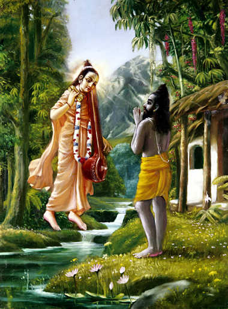

Nārada Instructs Vyāsadeva
[Sri Narada said to Vyasadeva]: "Your Goodness has perfect vision. You yourself can know the Supersoul Personality of Godhead because you are present as the plenary portion of the Lord. Although you are birthless, you have appeared on this earth for the well-being of all people. Please, therefore, describe the transcendental pastimes of the Supreme Personality of Godhead Sri Krishna more vividly."
Read More...Mahārāja Parīkṣit Cursed

Once, Maharaja Pariksit, while engaged in hunting in the forest, became extremely fatigued. He was searching for a reservoir of water and he came upon the hermitage of the sage Samika Rshi. Samika Rshi was sitting silently with closed eyes. King Pariksit, approached him and asked him for water, but the sage said nothing. The King was not received with any welcome or a place to sit or water and...
Read More...The Process of Creation
"The first form of Lord Vishnu is called Maha-Vishnu, the original creator of the total material energy. The innumerable universes emanate from the pores of His body. The Maha-Vishnu, into whom all the innumerable universes enter and from whom they come forth again simply by His breathing process, is a plenary expansion of Krishna. Therefore I worship Govinda, Krishna, the cause of all causes."
Read More...Appearance of Lord Varaha

"The Supreme Personality of Godhead incarnated as a boar to save the earth from the water of devastation. He dove into the water and lifted out the earth with His tusks."
Read More...Killing of Hiranyaksa by Lord Varaha
When the earth fell down into the Garbhodaka Ocean, the Lord assumed the form of a gigantic boar, Varaha, to lift it up with His tusks. The great demon, Hiranyaksha, attacked and was ultimately killed by Lord Varaha....
Read More...Lord Kapila instructs devahuti
"Lord Kapila, took His birth as the son of Kardama Muni and Devahuti. When Kardama Muni left home to live a renounced life, Devahuti questioned Kapila. She glorified Him as the Supreme Personality of Godhead and her only means for getting out of the darkness of ignorance, and she asked Him to please dispel her illusion and tell her of the relationship between spirit and matter."
Read More...